Мы служба дистанционной психологической помощи.
Мы команда психологов, психотерапевтов, менеджеров и других специалистов – созданы для того, чтобы помочь любому человеку стать хотя бы немного счастливее.
ПодробнееВ каких ситуациях можно обратиться к нам
- 
Кризис
Переживание потери близких. Стресс, Апатия, Тревоги. Страхи, Проблемы здоровья Кризисы возраста Зависимости и вредные привычки
Поможем в поиске путей разрешения бытового семейного конфликта, найти и устранить причины конфликтов. сгладить проблемы поколений. Поможем восстановить целостность семьи.
Переживание потери близких. Стресс, Апатия, Тревоги. Страхи, Проблемы здоровья Кризисы возраста Зависимости и вредные привычки
Дети
Переживание потери близких. Стресс, Апатия, Тревоги. Страхи, Проблемы здоровья Кризисы возраста Зависимости и вредные привычки
Коммуникации
Переживание потери близких. Стресс, Апатия, Тревоги. Страхи, Проблемы здоровья Кризисы возраста Зависимости и вредные привычки
Мужчина и женщина
Переживание потери близких. Стресс, Апатия, Тревоги. Страхи, Проблемы здоровья Кризисы возраста Зависимости и вредные привычки
Развитие
Переживание потери близких. Стресс, Апатия, Тревоги. Страхи, Проблемы здоровья Кризисы возраста Зависимости и вредные привычки